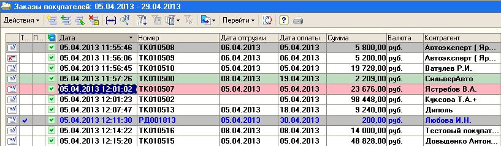

Основной первичный документ при работе с оптовыми покупателями.
На основании Заказа покупателя создаются все последующие документы:
"Задание на отгрузку", "Реализация товаров и услуг", "Перемещение", "Оплата от покупателя" и т.п.
Для оперативного анализа состояния заказов - в списке заказов покупателя принято определенное цветовое оформление:

Цвет текста - определяет наличие отгрузок по заказу:
Обычный черный текст - неотгруженные и непроделенные заказы,
Черный текст - неотгруженные, но уже проделенные заказы,
Синий текст - есть отгрузки (реализации) по данному заказу, например РД001813
Цвет фона строки - определяет состояние заказа:
заказ полностью снят например ТК010508
полностью отгружен например РД001813
Заказ должен быть отгружен например ТК010500
Заказ не полностью будет отгружен напимер ТК010507 - нет на складе, проделен в минус или уже отгружается по другому заказу
-----------------------------------------------------------------------------------------------------------------------------------------------------------
Документ "Заказ покупателя" предназначен для оформления предварительной договоренности с покупателем или комиссионером о намерении приобрести товары.
Для кого оформляется заказ для покупателя или для комиссионера определяется тем видом договора, который выбран в документе.
При этом позиции номенклатуры могут быть зарезервированы как из текущего остатка на любом из складов (оптовом или розничном), входящих в состав компании, так и размещены в заказах поставщиков. Информация о том, где именно необходимо резервировать товар, указывается в табличной части документа в графе "Размещение".
В графе "Размещение" можно указать склад (оптовый или розничный), на котором необходимо зарезервировать товар или заказ поставщику, при поступлении товаров по которому, произойдет автоматическое резервирование по внешнему заказу. При этом по одному заказу товар может быть зарезервирован на нескольких складах и размещен в нескольких заказах поставщику.
Параметры резервирования и размещения могут быть заполнены автоматически.
Для этого в документе предназначены флаги "Автоматическое резервирование" и "Автоматическое размещение".
Если эти флаги установлены, то графу "Размещение" можно заполнить автоматически при нажатии на кнопку "Заполнить и провести". При этом в первую очередь позиции номенклатуры распределяются по ранее оформленным заказам поставщиков, и только потом резервируются из текущего остатка на складах. При размещении и резервировании позиций номенклатуры на складах, приоритетным будет являться тот склад, который указан в шапке документа.
Схему автоматического и ручного размещения можно совмещать. При установленных флагах "Автоматическое резервирование" и "Автоматическое размещение" можно вручную указать вариант размещения для некоторых позиций в спецификации документа. Тогда при нажатии на кнопку "Заполнить и провести" произойдет автоматическое размещение только по тем позициям, для которых не задан вариант размещения.
После проведения заказа можно откорректировать схему размещения и резервирования по заказу с помощью документа "Резервирование товаров".
При распределении позиций номенклатуры по заказам поставщиков учитывается предполагаемая дата отгрузки («Отгрузка») по документу "Заказ покупателя" и предполагаемая дата поступления («Поступление») по документу "Заказ поставщику". Дата поступления должна быть меньше даты отгрузки (товар должен поступить раньше, чем его предполагается отгрузить).
Нажав на кнопку "Анализ" можно получить подробный отчет о состоянии заказа покупателя.
В заказе можно указать предполагаемую дату оплаты («Оплата») и банк или кассу, куда должны поступить денежные средства по оплате заказа. Эта информация используется для планирования входящих платежей.
Для контроля отпускных цен в заказах можно использовать плановую себестоимость. В качестве типа цен плановой себестоимости устанавливаются те цены, по отношению к которым рассчитывается допустимый процент наценки. В заказе в диалоговом окне "Цены и валюта" устанавливается флаг "Использовать плановую себестоимость". В этом случае при вводе цен в заказе будет автоматически рассчитан процент наценки и отклонение от плановой себестоимости. Тип цен плановой себестоимости определяется в настройках параметров учета на закладке "Общие".
Для оформления оплаты по заказу, на основании документа "Заказ покупателя" можно выписать документ "Приходный кассовый ордер" в случае наличной оплаты или зафиксировать безналичную оплату с помощью документа «Платежное поручение входящее» с последующей регистрации его оплаты (флаг "Оплачено") .
Отгрузку товаров по заказу покупателя можно оформить с помощью документа "Реализация товаров и услуг" с установленными видами операции продажа или комиссия, в зависимости от того, для кого оформлен заказ: для покупателя или комиссионера.
Табличная часть каждого последующего документа "Реализация товаров и услуг", оформленного на основании заказа будет заполняться с учетом всех выписанных и ранее отгруженных позиций номенклатуры.
При этом будет дополнительно учитываться информация, указанная в графе размещения по заказу.
В том случае, если товары в заказе покупателя размещены на нескольких складах, то с помощью кнопки "Оформить реализацию" можно выписать сразу несколько документов реализации на разные склады и автоматически сформировать и распечатать счета-фактуры. Настройка параметров оформления документов производится в отдельном диалоговом окне, которое вызывается по кнопке "Действия"- "Открыть форму настройки реализации".
Для контроля текущих остатков на складе можно перед выпиской документов реализации вызывать диалоговое окно контроля остатков и редактирования количества товаров в накладных, выписанных по заказу. Порядок вызова этого диалогового окна определяется в настройках пользователя.
Снятие резерва по заказу покупателю производится в момент отгрузки позиций номенклатуры по заказу.
В том случае, если резервирование происходило в момент поступления позиций номенклатуры по заказу поставщику, то снятие резервирования может также происходить при оформлении документа "Возврат товаров поставщику".
Снятие резерва с просроченных заказов производится документом "Закрытие заказа".
В документе "Заказ покупателя" предусмотрена возможность подключения системы оповещения о предстоящих операциях по заказу (отгрузке или оплате заказа). Для этого надо установить флаг в поле "Напоминание" и указать время, когда надо выдать оповещение о заказе.
Информацию о текущих, просроченных и предстоящих отгрузках и оплатах по заказу покупателя можно посмотреть в обработке "Календарь пользователя".
с сентября 2014г. добавлено поле для определения типа заказа
Тип Заказа:
0 - ручной ввод (неопределен),
1 - Автокомплектация,
2- Коннект-24,
3- Store,
4- Роботы c FTP,
5 - Федунов УТ,
6 - Объединенный заказ,
7 - объединенный заказ (293 или 295 обработка) по Подразделению Склада или общий заказ для филиала,
8 - заказ Terminal